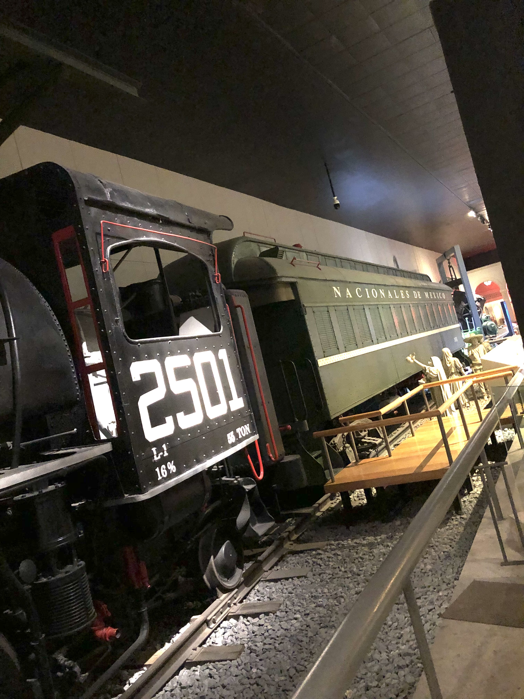

PORTAFOLIO ELECTRÓNICO
Proyecto Integrador
Portada
Intervención Educativa
Desarrollo Regional y Microhistoria
Elementos Básicos de Investigación Cualitativa
Políticas Públicas y Sistemas Educativos Contemporáneos
Reflexión Personal
Proyecto Integrador
Nombre del estudiante: Juan Antonio Hernández Flores
Universidad: Universidad Pedagógica Nacional Unidad 191 Monterrey
Carrera: Licenciatura en Intervención Educativa
Semestre: Segundo semestre
Fecha: Monterrey, Nuevo León a 17 de junio de 2025
Educar para transformar
Intervención Educativa
Mtra. Estefanía Alanís Flores
üåü Proyecto de Intervenci√≥n
Modelo elegido: Enfoque social en la problemática de la drogodependencia
Nombre del proyecto: “Renacer: acompañamiento para jóvenes y familias ante las adicciones”
üìù Introducci√≥n
Este proyecto nace de lo que he visto en mi colonia, ubicada en la zona norte de Monterrey. En la colonia donde vivo, es común ver a jóvenes en las esquinas fumando pasando mucho tiempo en la calle, y algunos ya están involucrados en el consumo de drogas. Muchos de ellos han dejado sus estudios, tienen problemas familiares o simplemente no tienen a nadie que los escuche esto me preocupa porque muchas veces estos jóvenes no tienen espacios seguros donde puedan expresarse, ni personas que los escuchen sin juzgar. Por eso elegí el modelo de “Enfoque social en la problemática de la drogodependencia” , ya que este permite acercarse más a la persona, porque no se trata solo de regañar o castigar, sino de entender qué hay detrás del consumo y ofrecer ayuda real, cercana y más humana mejorando su calidad de vida.
Elegí este modelo ya que permite trabajar tanto con los jóvenes como con sus familias, para dar orientación, espacios donde reflexionen , escucharlos y darles acompañamiento. Lo que quiero es que sientan que sí hay salida y que no están solos.
üéØ Descripci√≥n del Proyecto
Mi propósito: Proponer un plan de intervención para prevenir y atender el consumo de drogas en adolescentes, a través de pláticas, talleres, actividades artísticas y acompañamiento familiar, en mi comunidad.
¿Dónde se aplicará?: En el Centro Comunitario Valle de la Esperanza, y algunas actividades al aire libre en la cancha de futból.
¿Cuándo?: Durante 5 semanas, con sesiones los viernes por la tarde y algunos sábados por la mañana.
¿A quién va dirigido?: A jóvenes de 12 a 18 años que estén en riesgo o ya hayan empezado a consumir sustancias.
¿Quién lo llevará a cabo?: Yo (como futuro interventor), con el apoyo de una psicóloga, un trabajador social, y un grupo de voluntarios de la colonia.
üìã Actividades
Actividad
¿Qué se hará?
Lugar
Fecha
¿Quién lo hace?
1
Plática: “Lo que nadie te dice sobre las drogas” – Mitos y realidades
Centro Comunitario Valle de la Esperanza
Viernes, Semana 1
Psicóloga y yo
2
Taller de expresión: “¿Qué siento, qué pienso, qué decido?” con actividades artísticas
Centro Comunitario Valle de la Esperanza
Sábado, Semana 2
Psicóloga y voluntarios
3
Encuentro con padres: “Cómo apoyar sin juzgar” – guía para papás y mamás
Centro Comunitario Valle de la Esperanza
Viernes, Semana 3
Trabajador social
4
Cine-debate con los jóvenes sobre una película que trate adicciones y consecuencias
Centro Comunitario Valle de la Esperanza
Viernes, Semana 4
Psicóloga y yo
5
Jornada de cierre: juegos, reflexión, cartas anónimas, comida y entrega de reconocimientos
Cancha de la colonia
Sábado, Semana 5
Todo el equipo
✅ Beneficios esperados
Con este proyecto busco que:
Los jóvenes conozcan los riesgos reales de las drogas y aprendan a decir no.
Se sientan escuchados y acompañados, sin ser juzgados.
Las familias mejoren su comunicación y apoyo emocional.
Se fomente un ambiente más sano en la colonia.
Se reduzcan los casos de consumo entre adolescentes en mi colonia.
ü߆ Conclusi√≥n
Gracias a esta materia me di cuenta de que como interventor educativo puedo trabajar mucho más allá del aula en donde puedo transformar vidas, aunque sea poco a poco. No se necesita tener muchos recursos, sino atreverse y teniendo voluntad, empatía y un plan. Las adicciones no son un problema solo de quien consume, también es una señal de que alguien necesita ayuda siendo esto un reflejo de la sociedad que a veces abandona. Con este proyecto aprendí que escuchar, acompañar y proponer espacios que pueden cambiar vidas. Esta licenciatura me da herramientas para trabajar en la comunidad, en las calles, en centros comunitarios, con familias y con quienes más lo necesitan.
Desarrollo Regional y Microhistoria
Mtro. Francisco Javier Paisano Cortinas
üé• VLOG ‚Äì Explorando el Museo de Historia Mexicana (Monterrey)
¡Hola a todos! Quiero contarles cómo fue mi visita al Museo de Historia Mexicana en Monterrey. Ese día iba caminando por el centro, con el sol encima pero con muchas ganas de descubrir algo nuevo. Después de varios minutos, por fin llegué... y en cuanto vi el edificio, me sorprendí muchísimo. Es enorme, moderno y transmitía una energía muy bonita.
La verdad, iba con muchas expectativas, ya que nunca había tenido oportunidad de ir por cuestión de tiempo; sin embargo, la verdad me emocionaba ir y quería conocer más sobre cómo vivían antes en México, cómo era la vida en los tiempos antiguos, ver cosas que tal vez nunca había visto en persona… y no me decepcionó, cumplió con todas mis expectativas.
üöÇ Sala del Siglo XX
Aquí fue donde empezó el recorrido. Vi una locomotora de vapor gigante, fue muy impresionante de ver y me metí a verla por dentro y me imaginé cómo viajaban las personas hace 100 años. También había una estación de tren recreada, retratos de personajes como Madero y Porfirio Díaz, y pantallas con videos en el que podías interactuar. Sentí que por un momento estuve en otra época, fue una sensación muy bonita.
üì∏ 
üì∏
üè∫ M√©xico Antiguo
Al pasar a esta sala, fue como entrar al corazón del pasado. Había vasijas, esculturas talladas, dioses antiguos y objetos rituales. Una de las que más me llamó la atención fue la serpiente de fuego, llamada Xiuhcóatl, que estaba tallada en piedra. Lo que más me impactó es que no era solo una pieza de arte, también tuvo su función, el cuál fue usada como desagüe y es algo impresionante de ver y de pensar el nivel de ingenio que se tuvo y a su vez en el uso que este se le podía dar. Me impresionó cómo todo tenía un significado, hasta el más mínimo detalle.
üì∏
üì∏
üßµ Arte y pensamiento textil
Ahora llegamos a esta sala fue muy especial. Vi huipiles, rebozos y bordados llenos de colores muy bonitos y con diseños que los hacen únicos. Me gustó mucho cómo cada prenda tenía su propia historia, su origen, y representaba algo importante. Había una frase que me gustó mucho. No decía quién la escribió, pero aquí la comparto:
“El arte textil es un legado vivo, que continúa evolucionando sin perder su esencia.”
üì∏
üì∏
üåø Madre Tierra
Cuando entré a esta sala, sentí que me metí a un pedacito de cada rincón de México. Ya que había representaciones del desierto, la selva, el bosque… Todo en un solo lugar. Vi plantas enormes las cuales desconozco si eran reales o artificiales, también había sonidos de la naturaleza y un mapa muy grande que mostraba toda la geografía del país. Me hizo pensar en la riqueza natural que tenemos como país y cómo forma parte de nuestra historia.
üì∏
üì∏
üïäÔ∏è Los Marfiles
Ya casi al final del recorrido, me encontré con unas esculturas talladas en marfil que tenían unos detalles muy impresionantes. Representaban figuras religiosas como vírgenes, santos y ángeles, y venían de lugares como Filipinas, India y China. Fue impresionante ver cómo el arte puede viajar y atravesar fronteras, y conectar infinidad de culturas tan diferentes.
üì∏
üì∏
üìò ¬øQu√© aprend√≠?
Aprendí muchísimo sobre cómo ha cambiado la vida en México a lo largo del tiempo. Ver la locomotora, los objetos prehispánicos, las vestimentas tradicionales y hasta los ecosistemas del país me hizo entender que nuestra historia no solo está en los libros, también está en cada objeto, en cada prenda y en cada rincón natural que tenemos. Me sorprendió darme cuenta de cuánto ingenio, arte y significado hay en cosas que a veces no tomamos en cuenta. También aprendí que la historia no es solo algo del pasado, está viva y siempre estará arraigada al presente en nuestra cultura, hasta en nuestra forma de vestir, pensar y vivir.
⚠️ Retos
A veces era difícil leer toda la información ya que era mucha o las letras eran muy pequeñas. También me quedé con ganas de tocar algunas cosas pero sé que no se puede. Otro reto fue tratar de recordar todos los nombres y detalles ya que eran muchísimos
üí¨ Reflexi√≥n final
Esta visita al museo fue una experiencia muy bonita y significativa para mí. Me hizo sentir mucho orgullo de ser mexicano. Aprendí cosas nuevas, me emocioné y, sobre todo, me sentí más cerca del pasado. Caminar por cada sala fue como viajar al pasado y darme cuenta de todo lo valioso que tuvimos y tenemos aún como país: por ejemplo, nuestras tradiciones, nuestra gente, nuestra cultura y nuestra forma de ver el mundo.
Lo que más me gustó es que no fue una visita aburrida, fue una experiencia que me puso a pensar y sentir. Ya que vi físicamente objetos que tenían sus propias historias, desde los textiles hechos a mano hasta una locomotora enorme o las figuras antiguas. Cada cosa tenía un propósito, un mensaje, y eso me hizo ver que nuestra historia está viva y que sigue presente en todo lo que somos hoy. Sinceramente, si algún día vuelvo a tener la oportunidad de visitar el Museo de Historia Mexicana, no lo pensaré dos veces e iré. Es un lugar que no solo te enseña, también te toca el corazón y, la verdad, vale muchísimo la pena.
Sinceramente, si algún día vuelvo a tener la oportunidad de visitar el Museo de Historia Mexicana, no lo pensaré dos veces e iré. Es un lugar que no solo te enseña, también te toca el corazón y la verdad vale muchísimo la pena.
üì∏
üì∏
Elementos Básicos de Investigación Cualitativa
Mtro. Mario Alberto Botello Velásquez
üí≠ ¬øQu√© aprend√≠?
Realizar esta primera jornada de observación fue una experiencia muy enriquecedora para mí. Me permitió acercarme por primera vez al contexto real de una secundaria, algo que solo me había imaginado o escuchado de otros. Aprendí que muchas veces lo que se dice de una institución no refleja del todo la realidad. Yo mismo iba con algunos prejuicios o ideas negativas que había escuchado sobre la secundaria, pero al estar ahí, me di cuenta de que el ambiente es mucho más tranquilo, organizado y con maestros con vocación que aman enseñar.
Uno de los aprendizajes más importantes fue adquirir la habilidad de observar con más atención. Estar pendiente de lo que pasaba en el salón y en los pasillos me ayudó a entender mejor cómo funciona la escuela, a cómo se comunican los maestros con los alumnos, cómo mantienen el control del grupo y cómo se adaptan a los retos del día a día. También me di cuenta de lo importante que es tener paciencia, empatía y respeto, tanto para enseñar como para convivir con adolescentes que están en una etapa de crecimiento.
üìå √Åreas de oportunidad, retos y reflexi√≥n
Un área de oportunidad que identifiqué fue entender cómo es la dinámica y cómo evalúan los maestros en este nivel. Me gustaría aprender más sobre ese aspecto, porque creo que es importante. También me di cuenta de que hay situaciones delicadas, como el comportamiento de algunos alumnos que no conocen bien los límites y pueden generar momentos incómodos, como cuando me pedían mis redes sociales. Reflexioné que poner límites y mantener una actitud más "profesional" es algo muy importante en esta profesión.
En general, este acercamiento me ayudó a fortalecer mis metas y objetivos, y a confirmar que quiero dedicarme a ser maestro y que, aunque hay retos, también hay muchas cosas buenas. Me siento muy motivado a seguir aprendiendo, observando con más atención y preparándome, adquiriendo nuevas habilidades y conocimientos.
Políticas Públicas y Sistemas Educativos Contemporáneos
Dra. Alicia Margarita Martínez Rincón
LOS ORGANISMOS INTERNACIONALES Y EL SISTEMA EDUCATIVO MEXICANO
1. La intervención de la OCDE en el sistema educativo mexicano
a) Políticas de la OCDE en materia educativa
En informes clave, como Improving Schools: Strategies for Action in Mexico (2010), la OCDE recomendó mejorar liderazgo escolar, gestión docente y participación social, alineado con sistemas de alta calidad. Además, en 2016 se acordó un sistema de evaluación docente vinculando capacitación, ingreso y estabilidad laboral conforme a directrices OCDE.
b) Desarrollo de estas políticas en México
En 2012, la reforma educativa introdujo un currículo competencial y la obligatoriedad de la educación media superior.
En 2013 se promulgó la Ley del Servicio Profesional Docente y del Instituto de Evaluación Educativa, incorporando exámenes objetivos en carrera docente.
Entre 2008–2016, se implementaron evaluaciones y capacitación ancladas al modelo OCDE, aunque con críticas por enfocarse menos en formación continua que en rendición de cuentas.
2. Estructura y modelo educativo de México
a) Comparación entre el modelo previo y la Nueva Escuela Mexicana (NEM)
ASPECTO
MODELO ANTERIOR (pre-2018)
NEM (post-2018)
Niveles educativos
3 de preescolar (4‑6), 6 de primaria, 3 de secundaria; medio superior opcional inicialmente, obligatorio desde 2012.
Se reorganiza por “fases”: Educación Inicial (0‑3), Preescolar (3‑6), Primaria (6‑12), Secundaria (12‑15).
Estructura curricular
Asignaturas tradicionales por grado, basada en competencias desde 2012.
Currículo por campos formativos, eliminación de grados, sustento en fases de aprendizaje.
Evaluación docente
Basada en exámenes, ingreso y promoción vía Servicio Profesional Docente (2013).
Se busca evaluar integralmente, aunque falta claridad en criterios según críticos.
Contexto político
Modelo técnico-empírico, continuidad con reformas de Peña Nieto.
Orientado a una transformación social comunitaria: valores, identidad, humanismo.
Conclusión estructural
El modelo anterior, iniciado por Peña Nieto (2012‑2013), se enfocaba en competencias, evaluaciones y obligatoriedad hasta nivel medio superior. Con la llegada de la NEM en 2023, se reestructura en fases, se eliminan grados y se priorizan procesos sociales, culturales y comunitarios en el currículo.
b) Análisis y opinión sobre la NEM
Aspectos positivos:
Busca que los alumnos no solo aprendan cosas de memoria, sino que también crezcan como personas, tomando en cuenta su entorno, emociones, cultura y vida diaria.
Le da más valor al trabajo en equipo entre la escuela, los maestros, las familias y la comunidad, reconociendo que todos educamos, no solo el salón de clases.
Aspectos negativos:
Los cambios se hicieron muy rápido y sin preguntar suficiente a los maestros o a las escuelas. Eso generó muchas dudas y resistencias.
Se juntaron o quitaron materias muy importantes como matemáticas y ciencias, y eso puede hacer que los estudiantes no aprendan bien lo básico.
En lugar de usar grados escolares (como 1°, 2°, etc.), ahora se habla de "fases", y eso ha causado confusión porque no está muy claro cómo funciona.
Hay preocupación de que se esté dando más importancia a ideas políticas o colectivas que al desarrollo personal y la libertad de cada alumno.
Mi postura:
Me gusta mucho que este modelo trate de ver al estudiante como un ser humano más holístico, y no solo como alguien que tiene que pasar exámenes. También me parece muy importante que quiera hacer que la comunidad y que los maestros tengan un papel más importante.
Pero también creo que hay cosas que no se hicieron bien. Por ejemplo, quitar materias que eran a mi parecer eran clave y el no preguntar ni preparar a los maestros bien para los cambios fue un error. Pienso que si se hubieran tomado más tiempo, escuchado más a quienes están cerca de los alumnos, y encontrado un equilibrio entre enseñar lo que se aprende en las escuelas y formar buenas personas, el cambio hubiera sido mucho mejor.
Referencias Bibliográficas
Reflexión Personal
Este segundo semestre fue muy especial para mí, porque aprendí un muchas cosas nuevas que me hicieron entender mejor qué es lo que hace un interventor educativo. Cada materia fue diferente, pero todas se conectan entre sí. Siento que ahora tengo una idea más clara de cómo podemos ayudar a las personas desde la educación.
En la clase de Elementos Basicos de Investigación Cualitativa , aprendi a hacer entrevistas, a observar lo que pasa a nuestro alrededor y a entender lo que nos cuentan otras personas. Usamos guías de entrevistas, hicimos reportes y también vimos algo llamado método etnográfico, que básicamente es investigar desde lo que uno ve, escucha y vive en un lugar. Lo que más me gustó fue que aquí no hay una sola “verdad”, sino que cada persona puede ver las cosas desde su punto de vista desde su interpretacion, y eso también es válido. El maestro Mario nos explicaba todo con calma y nos dejaba expresarnos libremente.
En la materia de Intervención educativa , vimos muchos temas: desde cómo diagnósticos psicopedagógicos, hasta modelos educativos, actividades fuera del aula, pedagogía social y cómo hacer una intervención en lo social o en lo educativo. Me di cuenta de que intervenir no es solo “ayudar por ayudar”, sino que hay que saber cómo hacerlo, conocer bien el problema y tener las herramientas para actuar. Esta clase me ayudó a ver que como interventores podemos trabajar en muchas áreas, no solo en escuelas. La maestra siempre nos animaba a pensar con mas creatividad y nos explicaba con ejemplos muy faciles de entender y a ver los problemas desde distintos ángulos.
En Políticas públicas y sistemas educativos contemporaneos , hablamos mucho de cómo las decisiones del gobierno afectan lo que pasa en las escuelas. Vimos reformas educativas, las leyes, programas y todo eso que muchas veces no se entiende, pero que sí influye mucho. Algo bonito de esta clase era que al principio de cada sesión escribíamos una frase motivadora. Eso me gustaba porque me hacía empezar la clase con buena energía y con ganas de seguir adelante. La maestra siempre nos explicaba todo de forma clara y se notaba que quería que entendiéramos bien cómo funciona el sistema educativo.
En la clase de Desarrollo regional y microhistoria , vimos que también es importante conocer la historia de nuestras comunidades. No todo está en los libros grandes de historia, también hay cosas importantes en lo local: lo que ha pasado en nuestra colonia, en nuestra ciudad. Aprendimos sobre historiadores y mucho mas, y cómo investigar desde lo pequeño. Me gustó mucho porque entendí que para poder ayudar a alguien, también hay que saber de dónde viene, cuál es su historia y qué ha vivido su comunidad todo esto como lo mencione anteriormente todo va arraigado en la educacion .
Además, llevé una materia optativa de Educación ambiental , donde hablamos sobre cómo cuidar el medio ambiente a traves de habitos y estrategias en nuestra comunidad y cómo desde la educación tambien podemos hacer la diferencia. Me ayudó a reflexionar sobre mis propios hábitos y en cómo puedo ayudar a que otras personas también cuiden más su entorno. Las actividades eran en linea lo cual siento que si era una desventaja ya que no es lo mismo aprender en presencial que de manera virtual , sin embargo, la maestra siempre nos ponia actividades muy dinamicas que me ayudaban a fomentar el pensamiento critico, lo cual era de mas facil comprension.
üìù Mi conclusi√≥n personal
La verdad, este semestre me hizo sentir más seguro de la carrera que elegí. Aprendí cosas muy útiles y también conocí otras formas de ver la educación. Cada docente que tuve puso de su parte para que entendiéramos, nos tuvo paciencia y nos motivó a seguir aprendiendo. Me sentí muy bien acompañado en todo momento ya que cuando teniamos dudas, no dudaban en explicarnos y eso en lo personal lo valoro mucho.
Me llevo muchas ideas nuevas con mas conocimientos, más herramientas para mi formación, y sobre todo, muchas ganas de seguir. Ahora veo que intervenir no es tan fácil como pensaba, pero sí es muy importante. Saber escuchar, observar, entender el contexto y actuar de manera mas responsable son cosas que aprendí y que me van a servir mucho en el futuro.
Estoy muy agradecido por todo lo que viví y aprendi en este segundo semestre. A veces fue cansado, claro, pero también me dejó mucha motivación. Siento que estoy en el camino correcto y quiero seguir dando lo mejor de mí.
 üì∏
üì∏